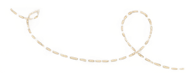
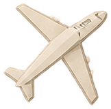
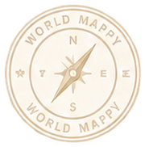

01あなたの旅人モデルは…
TRAVELER MODELMODEL NO.—
—型
—
IDENTITY CARD
MANUFACTURED BY
World Mappy Inc.
04RECOMMENDED ENVIRONMENT推奨動作環境
このモデルが性能を発揮する環境
おすすめの国計画ページで旅のヒントをチェック！
他のおすすめの国を見る→
06PERFORMANCE TIP開発者からのヒント
03TRAVELER PROFILE総合タイプ解説
05COMPATIBILITY互換性（他モデルとの相性）
07INCLUDED付属品
本製品には、取扱説明書が付属しています。ご家族やご友人に共有して、より良い旅のサポートを受けましょう。
結果をシェアする
友達を誘って、お互いの旅行タイプを比べてみませんか？

この画像を保存して、SNSの投稿やストーリーズに使えます。
この診断は当たっていましたか？
フィードバックありがとうございました！